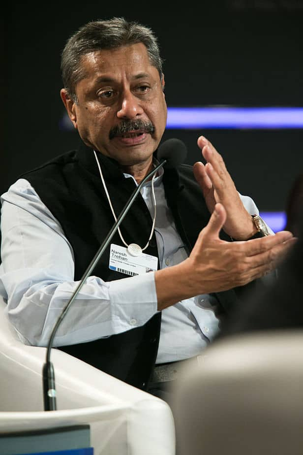
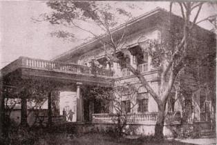
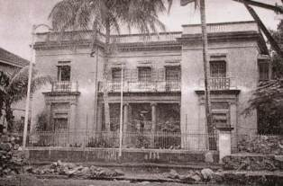
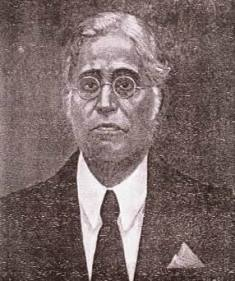

Apollo Hospital has received several awards and recognitions for its outstanding healthcare services and quality of patient care. The hospital has been consistently recognized for its commitment to delivering high-quality healthcare services and has been awarded as the best hospital in Maharashtra for 2019 by the International Health Care Awards.
The hospital has also received several other awards, such as the best hospital for quality in service delivery award at the ABP News presents Healthcare Leadership Awards 2015, held in Mumbai. This award highlights the hospital's dedication to providing high-quality healthcare services to its patients.
Marengo Apollo Hospital is also recognized as the Times Health Icon 2018 for being the best hospital for Oncology and Critical Care. This recognition is a testament to the hospital's expertise in treating critical diseases and its exceptional care for cancer patients.
Vision
To be one of the most trusted Hospitals in India by providing personalized care for best patient experience.
The vision of Marengo CIMS Hospital in Ahmedabad is to be one of the most trusted hospitals in India by providing personalized care for the best patient experience. This vision is based on the belief that every patient deserves high-quality medical care that is tailored to their specific needs and delivered with compassion and empathy. The hospital’s goal is to ensure that every patient who comes to the hospital feels valued, cared for, and supported throughout their healthcare journey.
Personalized Care: Marengo CIMS Hospital believes in providing personalized care to each patient. This means that the hospital staff takes the time to understand the patient’s unique medical history, current health status, and their specific needs and preferences. For example, if a patient has a chronic condition such as diabetes, the hospital staff will work with the patient to develop a personalized treatment plan that takes into account their lifestyle, diet, and other factors that may impact their health.
Out Top Doctors

Dr. Naresh Trehan
Cardiothoracic Surgeon
King George Medical College
Dr.Sandeep Vaishya
Neurosurgeon
G R Medical College
Dr. Arvinder Singh Soin
Hepatobiliary and Liver Transplant Surgeon
All India Institute of Medical Sciences
Dr. Manjula Anagani
Gynecologist and Obstetrician
Osmania Medical College in Hyderabad
Our History

It was 1920, and the island city of Bombay had only one medical college, the Grant Medical College. India was under British rule and naturally the college was managed by the British. No Indian doctors were appointed irrespective of their academic background and experience.This was the time when the country was in the throes of the independence movement. Local nationalistic leaders felt that the city should have a medical college that is established only with the help of locally generated funds without taking any help from the British rulers.
Through donations from the Tilak Swaraj Funds, on the 4th of September 1921, the National Medical College was established This College started functioning at the Victoria Cross Lane, Byculla. The founding fathers wanted to train doctors who could serve not only through hospitals, but would also reach out to the community. Incidentally Ayurveda was an obligatory part of the curriculum in our college. As, in those days, even the Universities were controlled by the British the founders affiliated the institution to the College of Physicians and Surgeons of Bombay and the first batch of students was admitted for its Licentiate Medical Practitioner (LMP) course.

The People’s Free Hospital was therefore set up close to the present campus and near where the YMCA stands today. Strapped as they were for funds – not being able to ask the government for aid, the administrators were always on the lookout for local support.
Fortuitously, at this time Dr AL Nair, the person after whom the road, on which we are situated today, is also named came into the picture. He was the proprietor of the Powell and Co. dealing in medical supplies and equipments. He magnanimously donated two acres of his land for the hospital campus. In 1925, Dr Nair also helped set up a well-equipped hospital which he named after his mother Bai Yamunabai Laxman Nair. He also donated funds to run the hospital. Incidentally, the story goes that the money donated was from the proceeds of the sale of land used to build the neighbouring Bombay Central Station!
Much later, Mr. MN Desai, popularly known as Topiwala Desai, made a generous contribution of Rs. 5 lacs to the College – which was then named after him as the Topiwala National Medical College.

In 1946, the municipal corporation of the city of Bombay passed a resolution taking over the college and the hospital and acknowledging the high standards of education and the strong support from the Municipal Corporation, the Bombay University also affiliated the twin institutions.
Since then without looking back the TN Medical College and BYL Nair Hospital have surged ahead and established themselves as premier institutions of the city. The institution boasts of the oldest Gastroenterology department. We are also credited with many other firsts – like the Rheumatology and dermatopathology services.
Ours is the only college in the city to have a speech and audiology department offering formal training. We were also the first to perform robotic. Ours is the only public hospital in the city to offer urodynamic studies and hyperbaric oxygen services. Ours is the first public hospital to have 7 of our depts. that have been ISO-9001 certified.